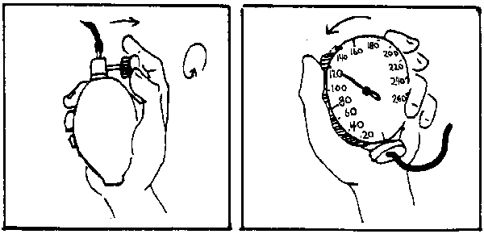

{% set pagetitle = "How to take blood pressure" %}
{% set seq_length = 5 %}
{% set seq_position = 5 %}
{% set seq_llink = "How_to_take_blood_pressure4.html" %} ## set rlink equal to next page href
{% set seq_rlink = "javascript:;" %} ## set llink equal to previous page href
{% extends "templates.jinja/base.page-with-sequence.html" %}
{% block title %} Hesperian - Pregnancy & Birth{% endblock %}
{% block id %}How_to_take_blood_pressure5{% endblock %}
{% block content %}

6. Then open the valve just a little so that the air leaks out slowly. As the air leaks out, you will start to hear the mother's pulse through your stethoscope
Notice where the needle or mercury is:
When you start to hear the pulse (this will be the top number) and
When the pulse disappears or gets very soft (this will be the bottom number)